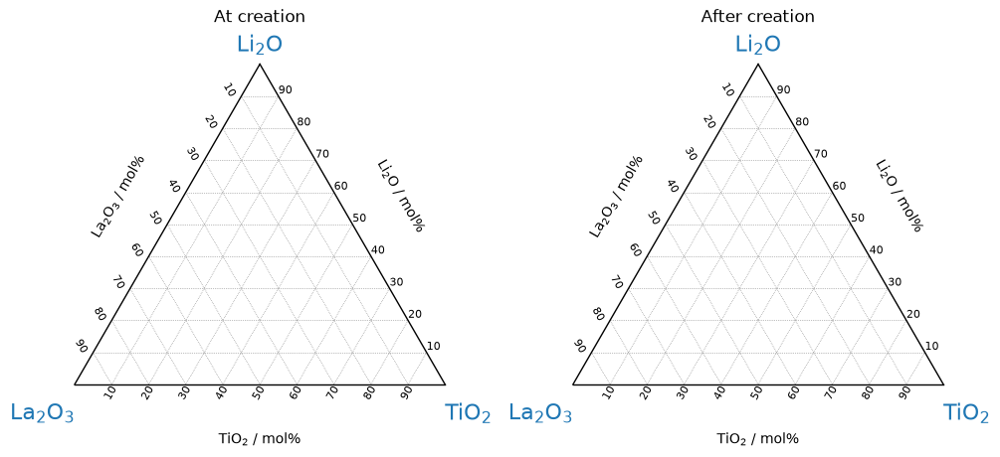
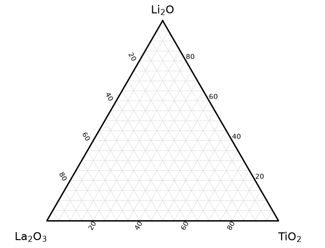
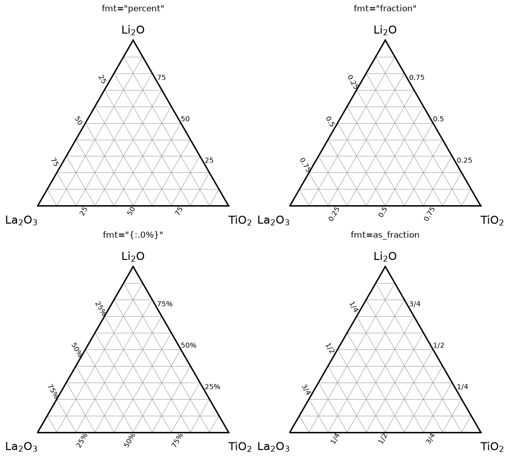
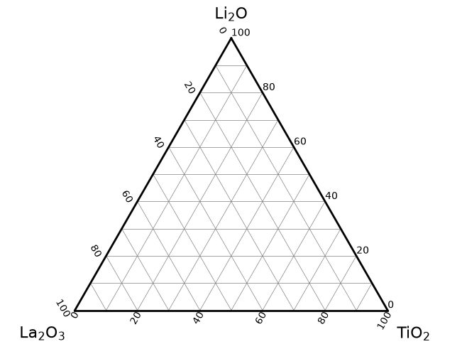
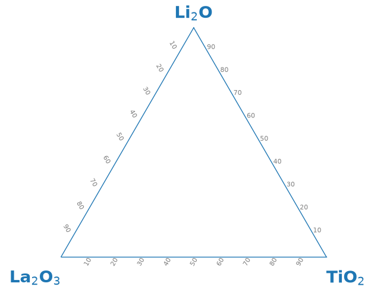
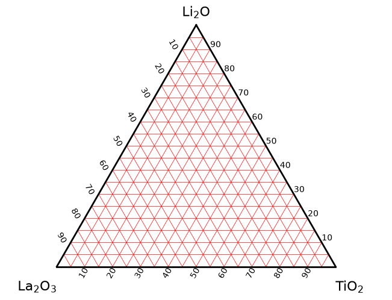
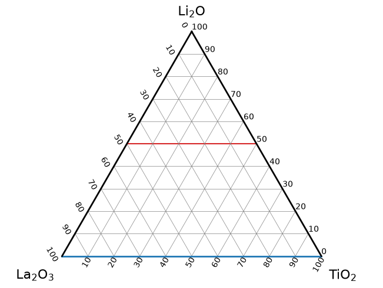
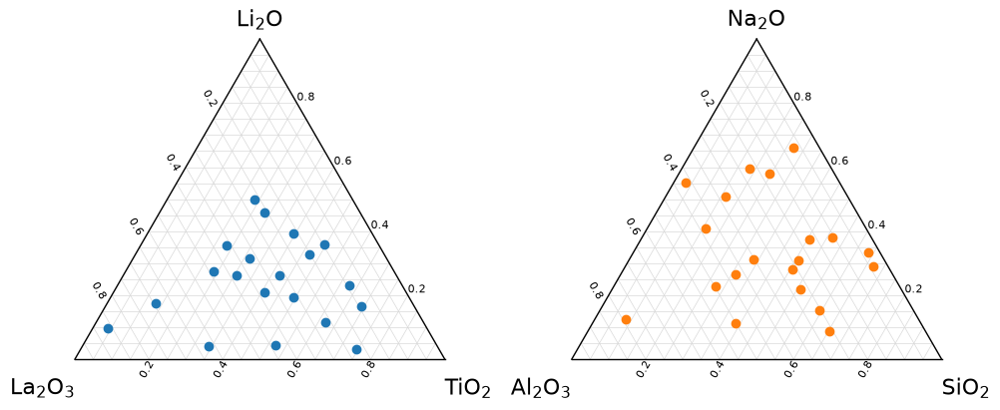

Customizing the diagram#
This page shows how to change the look of the five parts that TernaryDiagram draws: the border, the grid, the tick labels, the axis titles and the vertex labels. Each part can be set when the diagram is created or changed afterwards.
It also explains which edge carries the ticks of each component, how settings are merged, how to reach the matplotlib objects of each part and how to reuse a style for several diagrams.
import fractions
import matplotlib.pyplot as plt
import numpy as np
from ternary_diagram import TernaryDiagram
Parts of the diagram#
Each part has a keyword argument of TernaryDiagram for its settings at creation, a method that changes it afterwards and a read-only property that returns the matplotlib objects it has drawn:
Part |
At creation |
After creation |
Artists |
|---|---|---|---|
Border of the triangle |
|
||
Grid |
|
||
Tick labels |
|
||
Axis titles (none by default) |
|
||
Vertex labels |
|
A *_kw argument is a dictionary of the keyword arguments that the matching set_* method takes: passing grid_kw=settings is the same as calling set_grid(**settings) right after creating the diagram.
The only exception is labels of the vertex labels, which vertex_label_kw does not accept (it raises a ValueError) because the labels come from the materials; use set_vertex_labels to change them.
The settings are of two kinds: named items of the part, such as visible, step or fmt, and properties of the matplotlib objects of the part, such as color, linewidth or fontsize.
The two diagrams below look the same: the left one gets its settings at creation, and the right one gets the same settings afterwards.
materials = ["Li2O", "La2O3", "TiO2"]
titles = ["Li$_2$O / mol%", "La$_2$O$_3$ / mol%", "TiO$_2$ / mol%"]
fig, axes = plt.subplots(1, 2, figsize=(10, 4.5), layout="constrained")
at_creation = TernaryDiagram(
materials,
ax=axes[0],
border_kw={"linewidth": 1},
grid_kw={"linestyle": ":"},
tick_kw={"fontsize": 8},
axis_label_kw={"labels": titles, "fontsize": 10},
vertex_label_kw={"color": "tab:blue"},
)
left_title = axes[0].set_title("At creation", pad=24)
after_creation = TernaryDiagram(materials, ax=axes[1])
border = after_creation.set_border(linewidth=1)
grid = after_creation.set_grid(linestyle=":")
ticks = after_creation.set_ticks(fontsize=8)
axis_titles = after_creation.set_axis_labels(titles, fontsize=10)
vertex_labels = after_creation.set_vertex_labels(color="tab:blue")
right_title = axes[1].set_title("After creation", pad=24)

Each set_* method returns a new list of the matplotlib objects that it has drawn: Line2D for the border and the grid, Text for the labels and the titles.
Grid and tick spacing#
step sets the interval of the grid lines in set_grid() and the interval of the tick labels in set_ticks(), as a fraction between 0 and 1 (both are 0.1 by default).
The two intervals are independent, so a fine grid can have fewer labels.
Here the grid is drawn every 5 % and the tick labels every 20 %.
fig, ax = plt.subplots(layout="constrained")
td = TernaryDiagram(["Li2O", "La2O3", "TiO2"], ax=ax)
grid = td.set_grid(step=0.05, color="lightgray")
ticks = td.set_ticks(step=0.2)

Tick label format#
fmt of set_ticks() decides how each value, a fraction between 0 and 1, is written:
"percent"(the default) writes the value in percent without the%sign: 0.25 is shown as25."fraction"writes the fraction itself: 0.25 is shown as0.25.A format string, in the
%style such as"%.2f"or in the{}style such as"{:.0%}", is applied to the fraction:"{:.0%}"shows 0.25 as25%.A function takes the fraction as a float and returns the label.
def as_fraction(value):
return str(fractions.Fraction(value).limit_denominator())
formats = {
'"percent"': "percent",
'"fraction"': "fraction",
'"{:.0%}"': "{:.0%}",
"as_fraction": as_fraction,
}
fig, axes = plt.subplots(2, 2, figsize=(10, 9), layout="constrained")
for ax, (name, fmt) in zip(axes.flat, formats.items()):
td = TernaryDiagram(["Li2O", "La2O3", "TiO2"], ax=ax)
ticks = td.set_ticks(step=0.25, fmt=fmt)
title = ax.set_title(f"fmt={name}", pad=24)

By default, the values 0 and 1, which lie at the vertices, are not labeled.
Pass endpoints=True to label them too.
Here offsets of set_vertex_labels() also moves the vertex labels a little away from the vertices (from (0, 0.02), (0, -0.05) and (0, -0.05) by default, where each edge has length 1), so that they do not cover the new labels.
fig, ax = plt.subplots(layout="constrained")
td = TernaryDiagram(["Li2O", "La2O3", "TiO2"], ax=ax)
ticks = td.set_ticks(step=0.2, endpoints=True)
vertex_labels = td.set_vertex_labels(
offsets=[(0, 0.05), (-0.03, -0.05), (0.03, -0.05)]
)

With endpoints=True, the label of 100 of the second component and the label of 0 of the third component overlap at the bottom left vertex.
Accessing the artists shows how to hide one of them.
Axis titles#
The diagram has no axis titles by default.
set_axis_labels() takes the titles of the three components in the order of the materials, and each title is drawn outside the edge that carries the tick labels of its component:
Component (order in the materials) |
Vertex |
Edge with its tick labels and title |
Values increase from 0 to 100 |
|---|---|---|---|
1st |
Top |
Right edge |
from the bottom right vertex up to the top vertex |
2nd |
Bottom left |
Left edge |
from the top vertex down to the bottom left vertex |
3rd |
Bottom right |
Bottom edge |
from the bottom left vertex to the bottom right vertex |
So along every edge the values increase counterclockwise, toward the vertex of the component. The grid line of a value starts at that value on the edge of the component and runs parallel to the edge opposite to the vertex of the component, and every point on it has that value.
In the next figure, the title and the tick labels of each component have the same color. The black point is at Li2O 60 %, La2O3 10 % and TiO2 30 %: it lies on the horizontal grid line of 60 for Li2O, on the line of 10 for La2O3 that runs parallel to the right edge and on the line of 30 for TiO2 that runs parallel to the left edge.
colors = ["tab:blue", "tab:orange", "tab:green"]
fig, ax = plt.subplots(figsize=(6, 5.5), layout="constrained")
td = TernaryDiagram(["Li2O", "La2O3", "TiO2"], ax=ax)
ticks = td.set_ticks(step=0.2)
titles = td.set_axis_labels(
["Li$_2$O / mol%", "La$_2$O$_3$ / mol%", "TiO$_2$ / mol%"]
)
for i, color in enumerate(colors):
titles[i].set_color(color)
for label in ticks[i::3]:
label.set_color(color)
point = td.scatter([[0.6, 0.1, 0.3]], color="black", s=40)
![A ternary diagram of Li2O, La2O3 and TiO2 with axis titles and tick labels every 20 percent colored by component. The blue title Li2O / mol% is outside the right edge, and the blue tick labels on the right edge increase from 20 near the bottom right vertex to 80 near the top vertex. The orange title La2O3 / mol% is outside the left edge, and the orange tick labels increase from 20 near the top vertex to 80 near the bottom left vertex. The green title TiO2 / mol% is below the bottom edge, and the green tick labels increase from 20 near the bottom left vertex to 80 near the bottom right vertex. A black point marks the composition Li2O 60 percent, La2O3 10 percent and TiO2 30 percent.](../_images/4a74b46ad1dd3571d9e4b353321ca31c9c5506b2c2c43a265bac309142fd68bb.png)
The titles are shown as given, without the formatting of chemical formulas that the vertex labels get, so write matplotlib’s math text such as "Li$_2$O" for subscripts.
A title given as None or "" is not drawn, and pad sets the distance between the edges and the titles (0.15 by default, where each edge has length 1).
Hiding parts and matplotlib properties#
Every set_* method takes visible: visible=False hides the part and visible=True shows it again.
The other keyword arguments are properties of the matplotlib objects of the part, Line2D for the border and the grid and Text for the labels and the titles, and apply to all its objects.
Their aliases, such as lw for linewidth, are accepted too.
Here the grid is hidden, the border is thin and blue, the tick labels are small and gray, and the vertex labels are large and bold.
fig, ax = plt.subplots(layout="constrained")
td = TernaryDiagram(["Li2O", "La2O3", "TiO2"], ax=ax)
grid = td.set_grid(visible=False)
border = td.set_border(color="tab:blue", linewidth=1)
ticks = td.set_ticks(fontsize=8, color="gray")
vertex_labels = td.set_vertex_labels(
fontsize=20, fontweight="bold", color="tab:blue"
)

A property applies to all objects of the part and overrides the defaults that differ by edge or by vertex: for example, rotation given to set_ticks rotates the labels of all three edges by the same angle, and the different rotations of the edges cannot be restored afterwards.
A name that is not a property of the object raises an AttributeError before anything is drawn, and arguments of Axes.plot or Axes.text that are not properties, such as fontdict, are not accepted: pass the items of a fontdict as keywords instead (**fontdict).
Changes are merged#
A set_* method changes only the settings it is given; the other settings keep their previous values.
A named item given as None (the default of every named item) and a property left out are both kept.
Here, the second call to set_grid() changes the color, and the grid keeps the interval of 5 % from the first call.
fig, ax = plt.subplots(layout="constrained")
td = TernaryDiagram(["Li2O", "La2O3", "TiO2"], ax=ax)
first = td.set_grid(step=0.05)
second = td.set_grid(color="red")

Both calls draw 19 lines for each of the three components, and only the second one is red:
print(len(first), first[0].get_color())
print(len(second), second[0].get_color())
57 gray
57 red
A hidden part also keeps its settings and is drawn with them again when it is shown:
hidden = td.set_grid(visible=False)
shown = td.set_grid(visible=True)
print(len(hidden), len(shown), shown[0].get_color())
0 57 red
Accessing the artists#
The properties border_lines_, grid_lines_, tick_labels_, axis_labels_ and vertex_labels_ return the matplotlib objects that each part has drawn, so a single line or label can be changed with the methods of matplotlib.
The objects come in a fixed order:
border_lines_: the bottom, left and right edges.grid_lines_: the lines of the 1st, 2nd and 3rd components in this order, each in ascending order of value.tick_labels_: the labels in ascending order of value, each value for the 1st, 2nd and 3rd components in this order.axis_labels_: the titles that are drawn, in the order of the components.vertex_labels_: the labels of the top, bottom left and bottom right vertices.
The next example hides the label of 0 of TiO2, which comes close to the label of 100 of La2O3 at the bottom left vertex, draws the grid line of 50 % of Li2O in red and colors the bottom edge blue.
fig, ax = plt.subplots(layout="constrained")
td = TernaryDiagram(
["Li2O", "La2O3", "TiO2"],
ax=ax,
tick_kw={"endpoints": True},
vertex_label_kw={"offsets": [(0, 0.05), (-0.03, -0.05), (0.03, -0.05)]},
)
tick_labels = td.tick_labels_
tick_labels[2].set_visible(False) # 0 of TiO2, the 3rd component
grid_lines = td.grid_lines_
grid_lines[4].set_color("tab:red") # 0.5 of Li2O, the 1st component
grid_lines[4].set_linewidth(1.5)
bottom, left, right = td.border_lines_
bottom.set_color("tab:blue")

The properties are read-only, and each access returns a new list, so adding or removing items of the list does not change the diagram.
A set_* method replaces the objects of its part with new ones, which drops the changes made to the objects directly:
print(td.grid_lines_[4].get_color())
grid_lines = td.set_grid(linewidth=0.8)
print(td.grid_lines_[4].get_color())
tab:red
gray
Make the direct changes after the last call to the set_* method of the part, and hide a whole part with visible=False rather than by removing its objects.
Reusing a style#
The *_kw arguments are plain dictionaries, so the same style can be kept in one place and passed to several diagrams.
TernaryDiagram does not change the dictionaries passed to it.
Here one dictionary holds the settings of the border, the grid and the tick labels, and **style passes them to two diagrams.
style = {
"border_kw": {"linewidth": 1},
"grid_kw": {"step": 0.05, "color": "0.85"},
"tick_kw": {"step": 0.2, "fmt": "fraction", "fontsize": 8},
}
rng = np.random.default_rng(2)
fig, axes = plt.subplots(1, 2, figsize=(10, 4), layout="constrained")
left = TernaryDiagram(["Li2O", "La2O3", "TiO2"], ax=axes[0], **style)
left_points = left.scatter(rng.dirichlet([2, 2, 2], size=20))
right = TernaryDiagram(["Na2O", "Al2O3", "SiO2"], ax=axes[1], **style)
right_points = right.scatter(
rng.dirichlet([2, 2, 2], size=20), color="tab:orange"
)

To apply a style to a diagram that already exists, pass each dictionary to the matching method, for example td.set_grid(**style["grid_kw"]).
See also#
Getting started explains how to create a diagram, the order of the components and the formatting of chemical formulas in the vertex labels.
Layout and colorbars explains how the diagrams work with matplotlib’s layout engines.